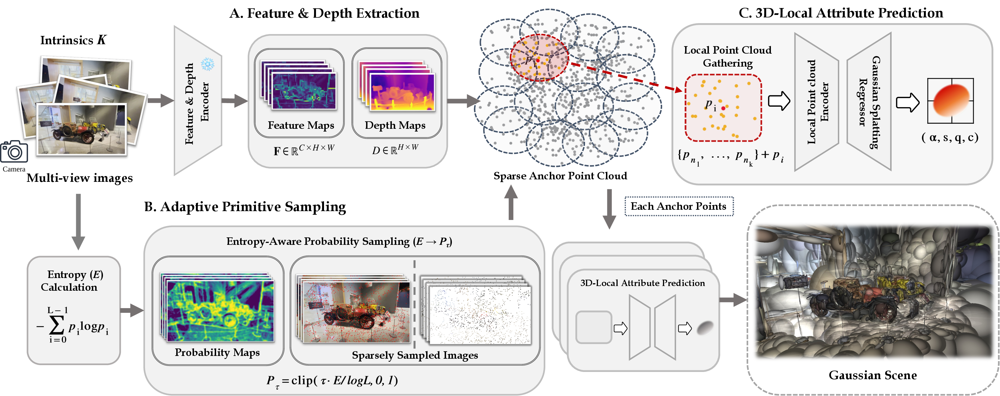
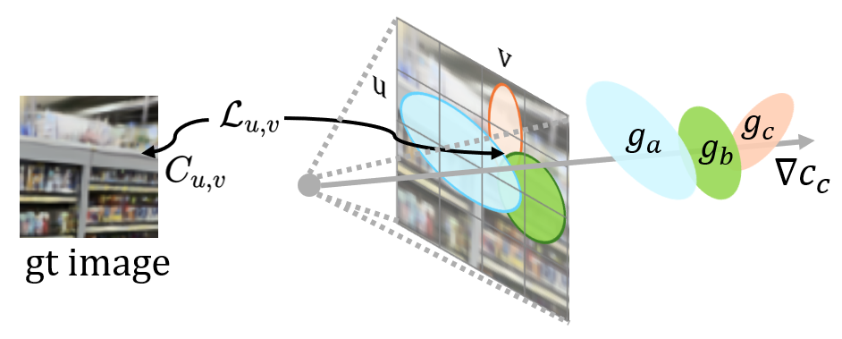
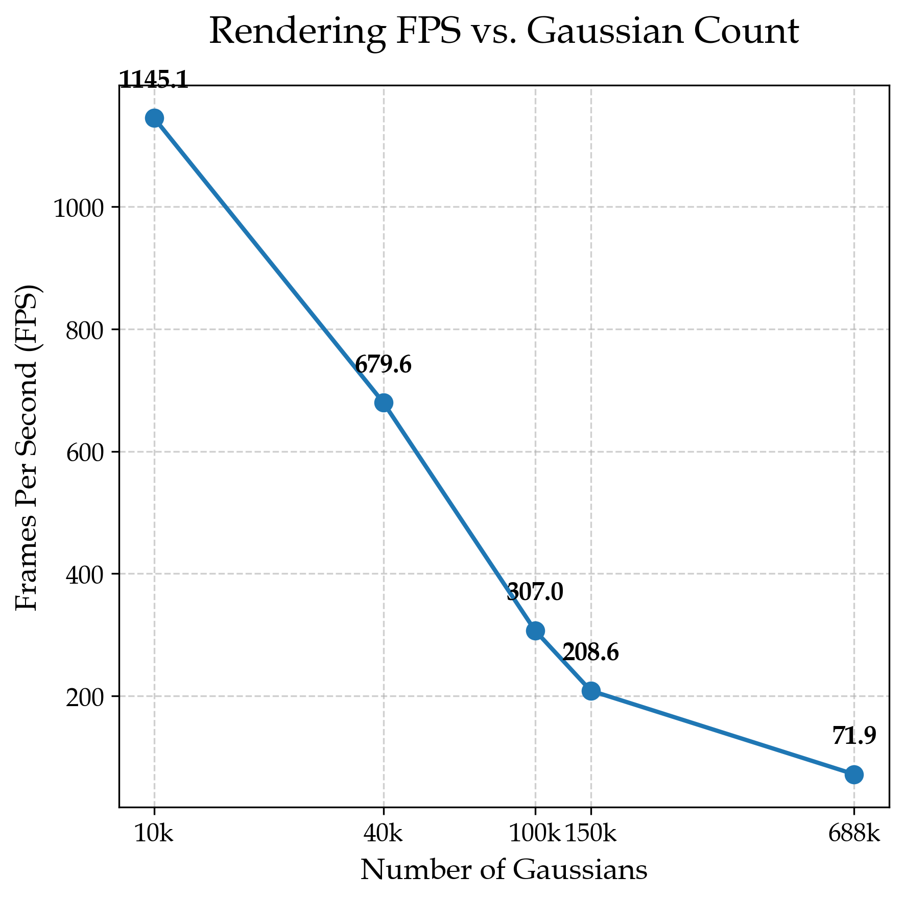

SparseSplat: Towards Applicable Feed-Forward 3D Gaussian Splatting with Pixel-Unaligned Prediction
Abstract
Recent progress in feed-forward 3D Gaussian Splatting (3DGS) has notably improved rendering quality. However, the spatially uniform and highly redundant 3DGS map generated by previous feed-forward 3DGS methods limits their integration into downstream reconstruction tasks. We propose SparseSplat, the first feed-forward 3DGS model that adaptively adjusts Gaussian density according to scene structure and information richness of local regions, yielding highly compact 3DGS maps.
To achieve this, we propose entropy-based probabilistic sampling, generating large, sparse Gaussians in textureless areas and assigning small, dense Gaussians to regions with rich information. Additionally, we designed a specialized 3D-Local Attribute Predictor that efficiently encodes local context and decodes it into 3DGS attributes, addressing the receptive field mismatch between the general 3DGS optimization pipeline and feed-forward models. Extensive experimental results demonstrate that SparseSplat can achieve state-of-the-art rendering quality with only 22% of the Gaussians and maintain reasonable rendering quality with only 1.5% of the Gaussians.
Key Contributions
🔍 Two Fundamental Design Flaws Identified
We are the first to identify and analyze two fundamental design flaws in existing feed-forward 3DGS: the distribution mismatch (rigid structure vs. content-aware distribution) and the receptive field mismatch (global context vs. local optimization).
📊 Adaptive Primitive Sampling
A novel entropy-based strategy that discards the "pixel-aligned" paradigm to generate a sparse, content-aware set of 3DGS anchors. The temperature parameter τ provides intuitive control over the quality-memory trade-off, enabling diverse downstream applications from AR/VR to 3DGS-SLAM.
🧠 3D-Local Attribute Predictor
A lightweight predictor leveraging 3D K-Nearest-Neighbors, aligning the network's design with the local nature of 3DGS optimization. Instead of regressing from a single pixel's feature, it aggregates neighborhood information in 3D space for each sparse anchor point.
Method Overview


Experimental Results
Quantitative Results on DL3DV
SparseSplat is evaluated at various operating points by adjusting the temperature parameter τ, resulting in different Gaussian counts (150k, 100k, 40k, 10k). Our method achieves state-of-the-art rendering quality at 150k Gaussians (PSNR 24.20 vs DepthSplat's 24.17) while using only 22% of the primitives.
| Method | Category | PSNR ↑ | SSIM ↑ | LPIPS ↓ | GS Count ↓ | Time (s) ↓ |
|---|---|---|---|---|---|---|
| Pixel-Aligned Methods | ||||||
| MVSplat | pixel-aligned | 22.95 | 0.774 | 0.192 | 688k | 0.260 |
| DepthSplat | pixel-aligned | 24.17 | 0.816 | 0.152 | 688k | 0.128 |
| Post-Processing Methods | ||||||
| GGN | postprocess | 20.23 | 0.570 | 0.268 | 162k | 0.320 |
| Long-LRM | postprocess | 20.92 | 0.627 | 0.265 | 200k | 0.115 |
| Voxelization Methods | ||||||
| AnySplat | voxelization | 17.45 | 0.471 | 0.320 | 608k | 0.378 |
| 17.34 | 0.463 | 0.330 | 528k | 0.384 | ||
| 16.14 | 0.417 | 0.390 | 393k | 0.415 | ||
| 12.22 | 0.309 | 0.519 | 222k | 0.441 | ||
| 8.91 | 0.239 | 0.618 | 113k | 0.473 | ||
| Ours – SparseSplat (Adaptive) | ||||||
| SparseSplat (150k) | adaptive | 24.20 | 0.817 | 0.168 | 150k | 0.398 |
| SparseSplat (100k) | adaptive | 23.95 | 0.786 | 0.189 | 100k | 0.192 |
| SparseSplat (40k) | adaptive | 22.65 | 0.737 | 0.251 | 40k | 0.111 |
| SparseSplat (10k) | adaptive | 21.29 | 0.665 | 0.321 | 10k | 0.105 |
Quantitative comparison on the DL3DV dataset. GS Cnt = average number of Gaussian primitives across scenes.
Visual Comparison on DL3DV

Efficiency vs. Quality Trade-off

Downstream Applications
🥽 AR/VR
The 150k model (398ms) is suited for AR/VR, where a higher one-time reconstruction cost is acceptable to gain a highly compact model ideal for efficient on-device storage and real-time rendering.
🗺️ 3DGS-SLAM
The 10k/40k models (105ms/111ms) are ideal for real-time SLAM — faster than DepthSplat (128ms) while maintaining robust quality. SparseSplat makes feed-forward 3DGS practical for sequential scene reconstruction.
🤖 Robotics & Edge
With a flexible τ parameter, users can select any operating point on the quality-speed-memory spectrum — critical for resource-constrained edge platforms such as cars, drones, or AR glasses.
Paper
BibTeX
@inproceedings{zhang2026sparssplat,
title={SparseSplat: Towards Applicable Feed-Forward 3D Gaussian Splatting with Pixel-Unaligned Prediction},
author={Zhang, Zicheng and Meng, Xiangting and Wu, Ke and Ding, Wenchao},
booktitle={Proceedings of the IEEE/CVF Conference on Computer Vision and Pattern Recognition (CVPR)},
year={2026}
}